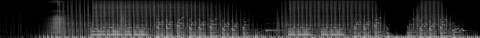
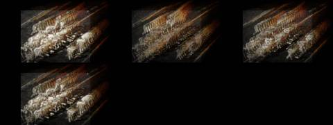
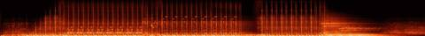

Afterlight / V Mosaic / AFL-17
V · Mosaic · AFL-17 of 22 · 1:28
Warmth, Air, Food, Water
The note that produced it
On this track: Good textures, busy in places, and it ducks out nicely.
“I want each to be a mosaic assemblage of the tracks, never the whole track. Each a separate video experiment to see the samples, get the groove. Aim for 1–2 minutes per track.”
“A different attempt and technology for each Afterlight song / music video experiment”: readable as embers from their spectrograms, as Gaussian splats of places.
What was made
Spacetime worms: whatever moves in the archive leaves a trail back through time, and when the song ducks out, time stops.
Groove bars from 0:14, 0:30, 0:44 · duck-outs from 1:28 and 1:36 · tape stop
What came back
The note on this version, which produced AFL-18 Dawn Remembers Again:
Good overall, not very listenable.
Images made while working: contact sheets, check frames, spectrograms, the stills compared before and after a fix. Tap one to see it full size.






No separate critic agent was run on this cut. The critique came from the director, in the notes on either side of it.
On the cut before
Good textures, busy in places, and it ducks out nicely.
On this cut
Good overall, not very listenable.
Sample map
Every sound placed in the 1:27 study, 42 events by layer, coloured by the track it was cut from. The bars under the map are the whole source tracks; the lit spans are the parts actually used (approximate: stretched and frozen samples are counted by where they start).
The recipe
The function that composed this study, exactly as it ran.
def warmth():
"""the textures and the places where the song ducks out: a groove that keeps stepping aside"""
n = 'warmth'; P = 2.030; m = Mix(90)
G1, G2, G3 = snap(n, 14.44), snap(n, 29.98), snap(n, 44.3)
m.put('bed', freeze(cut(n, 60, 66), 14), 0, 0.5, n, 60, 'freeze')
t = 5.0
m.put('loop', sweep(loop(n, G1, P, 4), 200, 15000), t, 1.0, n, G1, 'loop'); place_kicks(m, n, G1, P, t, 4); t += 4 * P
m.put('loop', loop(n, G2, P, 8), t, 1.0, n, G2, 'loop'); place_kicks(m, n, G2, P, t, 8); t += 8 * P
# duck out: two bars of the quiet texture region, one held chord, the groove's last hit echoing
m.put('duck', cut(n, 88, 88 + 2 * P), t, 1.0, n, 88, 'duckout')
m.put('echo', echo(cut(n, G2 + 7 * P, G2 + 7 * P + P / 4), P / 4, 0.62, 10), t, 0.7, n, G2 + 7 * P, 'echo'); t += 2 * P
sl = steps(n, G3, P, 16)
m.put('loop', loop(n, G3, P, 8), t, 1.0, n, G3, 'loop'); place_kicks(m, n, G3, P, t, 8)
play_pattern(m, 'chop', sl, [0, None, None, 3, None, None, 6, None, 8, None, 10, 10, None, 13, None, 15], t + 4 * P, P / 16, 0.8, n, G3, P, reps=4)
t += 8 * P
m.put('duck', freeze(cut(n, 96, 100), 5), t, 0.8, n, 96, 'freeze'); t += 2 * P
m.put('loop', loop(n, G1, P, 6), t, 1.0, n, G1, 'loop'); place_kicks(m, n, G1, P, t, 6); t += 6 * P
m.put('loop', tapestop(loop(n, G2, P, 1), 1.0), t, 1.0, n, G2, 'tapestop')
m.put('ember', ember(cut(n, 108, 116), 16, 0.7), t, 1.0, n, 108, 'tail')
m.duck(['loop', 'bed'], 0.45, release=0.25)
return mThe picture technique
class Worms:
"""what moves in the archive leaves a body through time: each moving pixel is extruded backward along a slanting time axis"""
def __init__(s, ctx, cats=('fir', 'chi', 'han', 'sun'), seed=5):
s.c = ctx; s.clips = [clip_frames(i, 320, 240, 12, 10) for i in footage(cats, 8, seed)]
s.hist = []; s.ch = 0; s.last = -1; s.prev = None; s.ft = 0.0; s.emb = Embers(15000, 7)
s.cuts = sorted(set(round(e['t'], 2) for e in ctx.events if e['layer'] in ('loop', 'a')) | set(round(x, 2) for x in ctx.kicks[::12]))
def frame(s, t, dt):
c = s.c; k = sum(1 for x in s.cuts if x <= t)
if k != s.last: s.last = k; s.ch = (s.ch + 1) % len(s.clips); s.prev = None
frozen = c.e('duck', t) > 0.05
if not frozen: s.ft += dt
cl = s.clips[s.ch]; f = cl[int(s.ft * 12) % len(cl)].astype(np.float32)
L = f @ np.array([0.3, 0.59, 0.11], np.float32)
if s.prev is not None and not frozen:
mv = np.clip(np.abs(L - s.prev) * 6, 0, 1); mv = gaussian_filter(mv, 1.2)
s.hist.append((mv, f)); s.hist = s.hist[-40:]
s.prev = L
out = np.zeros((360, 640, 3), np.float32); n = len(s.hist)
kk = c.kick(t, 0.25)
for j, (mv, ff) in enumerate(s.hist):
age = n - 1 - j; ox = int(age * 5.5); oy = int(-age * 3.2); sc = 1 - age * 0.008
sl = cv2.resize(ff * mv[..., None], (int(400 * sc), int(300 * sc)))
x0 = 120 + ox + int(200 * (1 - sc)); y0 = 40 + oy + int(150 * (1 - sc)) + 20
x1, y1 = min(640, x0 + sl.shape[1]), min(360, y0 + sl.shape[0])
if x0 < 0 or y0 < 0 or x1 <= x0 or y1 <= y0: continue
heat = thermal(np.full(1, 0.95 - age / 45.0))[0]
out[y0:y1, x0:x1] = np.maximum(out[y0:y1, x0:x1], sl[:y1 - y0, :x1 - x0] * heat * (1.4 - age / 40.0))
cur = cv2.resize(f, (400, 300)) * 0.18; out[60:360, 120:520] += cur[:300]
img = up(out) * (0.9 + 0.5 * kk)
if kk > 0.95 and n:
ys, xs = np.nonzero(s.hist[-1][0][::3, ::3] > 0.4); idx = np.random.default_rng(int(t * 100)).permutation(len(xs))[:250]
s.emb.emit(xs[idx] * 3 * 400 / 320 * 2 + 240, ys[idx] * 3 * 300 / 240 * 2 + 120, vx=40, vy=-70, T=1.0, life=2.2)
s.emb.step(t, dt, wind=(70, -20), gust=kk); img += s.emb.draw(t, 0.9)
return img + gaussian_filter(img, (5, 5, 0)) * 0.4Files
The scripts that made this version, as plain text.
- compose.py254 linesthe nine mosaics: every cut, loop and freeze
- sampler.py154 linesloop, stretch, reverb, echo, freeze, tape stop
- mix.py85 linesthe 178-second set
- sound_design.py91 linesneedle drop, inhales, risers, sub, tape bus
- engines.py367 linesthe ten picture techniques
- vis_common.py106 linesshared embers, archive frames, the finish
- render.py41 linesrenders frames and encodes
- analyze.py21 linestempo and onsets of each source track
A film concept by Sosuke & Watson · CRASH LAB · PAELEO · CINEOSIS LAB